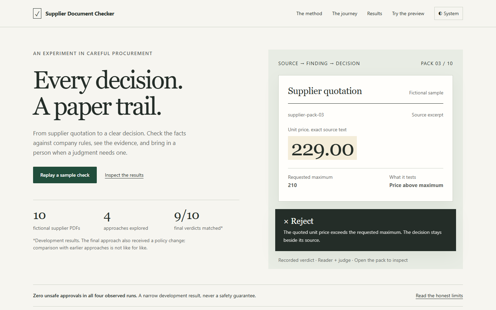
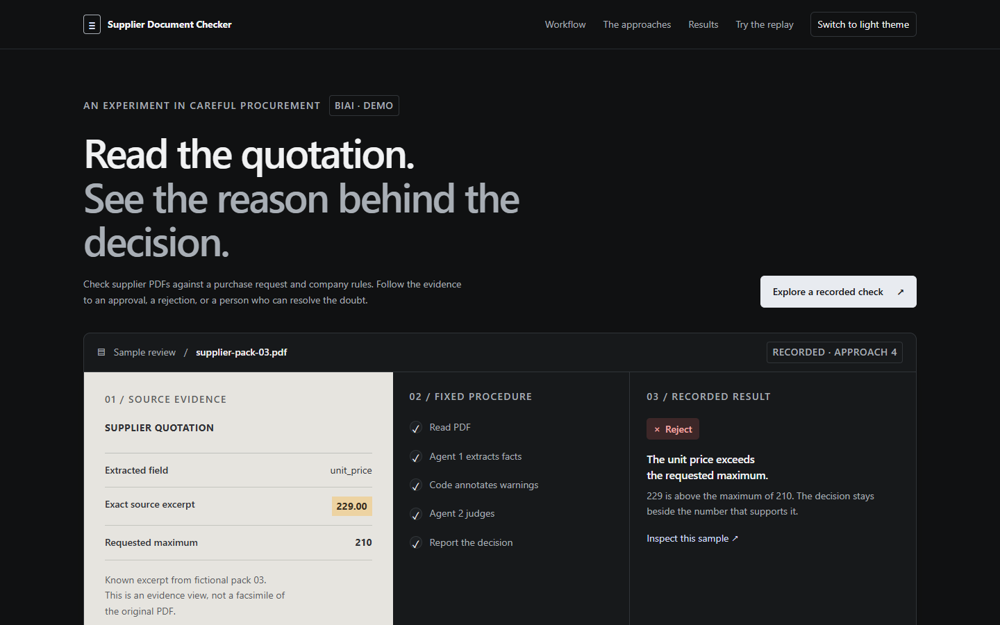
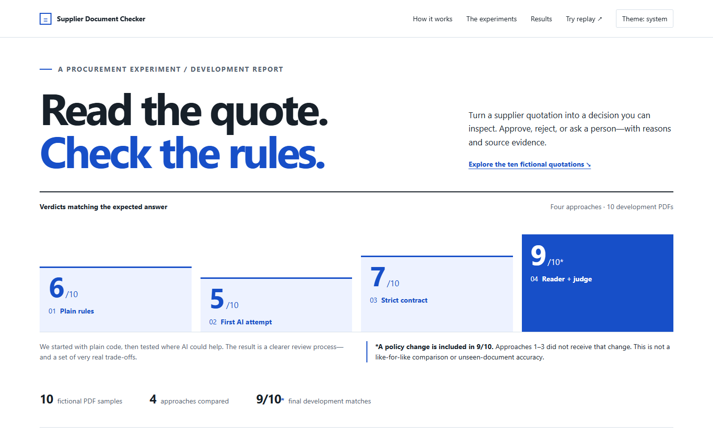

1. Evidence desk
Calm editorial layout. The quotation and its finding tell the story together. Recommended for the interview audience.
Mobile screenshotSupplier Document Checker / visual direction previews
Each draft includes the full story, ten-pack results explorer, theme controls and a local recorded-answer replay. Open a draft to try it. No API key or backend is needed.

Calm editorial layout. The quotation and its finding tell the story together. Recommended for the interview audience.
Mobile screenshot
A precise product workspace. Source, procedure and result share one view. Shown in dark mode; both themes work.
Mobile screenshot
A chart-led presentation. The four experiments and the comparison caveat appear immediately.
Mobile screenshotThese are visual drafts. The Next.js application, mock API and live-run integration follow the direction choice. All changes are inside web/.
View all six candidate thumbnails — the three additional candidates can also be developed.